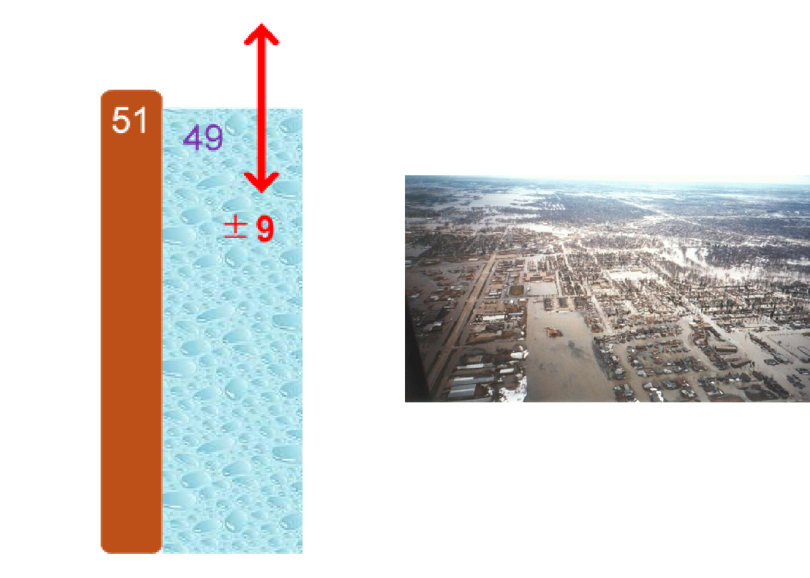

All analysis is uncertain
Analysis is based on a model of the real word. Whether we are looking at statistics about the past, measurements of the present, or forecasts of the future, there will always be a degree of uncertainty in the outputs.
Making decisions using uncertain information can be uncomfortable – decisions would be far easier if we knew for sure what the consequences of each choice would be – but this is an unavoidable position, so analysts aspire to provide honest and practical advice on uncertainty.
Taking account of uncertainty – and being seen to do so – is important for public trust. We must not pretend that the consequences of a policy or decision are certain: they are always uncertain to some degree. For each option, a range of outcomes are possible. Implying certainty about one particular outcome can damage public trust when things turn out differently.
Why does it matter?
Red River Flood, Grand Forks USA, 1997
Example
The National Weather Service (NWS) predicted, 2 months in advance, the Red River to crest 49 feet.
In response, the levees were built to handle a flood of 51 feet
The actual flood level was 54 feet
Had the NWS communicated their uncertainty (+/- 9 feet) the several $billion damages could have been avoided

Relying on best estimates may lead to the wrong decision being made
This uncertainty can be critically important to any decisions based on the analysis, as ‘best estimates’ are generally not enough to make an informed decision. For example, Option A may appear better than Option B when looking at the most likely outcome of each, but if the uncertainty in A is greater than in B then it might carry an unacceptable chance of much worse outcomes.
The presence of uncertainty in analysis may not always inspire confidence, but the absence of uncertainty is even worse. Since uncertainty is ever-present, omitting it from analysis leaves it unacknowledged and unassessed. It could be of any size, leaving the true range of possible outcomes entirely unknown. A proper assessment of analytical uncertainty should reassure you that the analysts have considered the limitations in their data and methodology, as well as the inherent randomness in the world, in order to provide an honest assessment of the range of possible outcomes – rather than presenting misplaced confidence in an impossibly accurate estimate.
Decision makers have a critical role working with analysts to agree what the analysis should focus on in relation to the decision being made (for example, a range around an estimate may be less useful than understanding what the percentage take up should be a policy for the policy to be a benefit), helping to identify sources of uncertainty, discussing how the results inform the decision being made.
Decision makers have a critical role
Key points to remember
This toolkit has been written for analysts to help them understand and assess the uncertainty in their work, and then to communicate that to the users of their analysis in an effective and helpful way. Feedback from those users – those who commission the work and make decisions informed by it – is crucial to helping refine and improve this guidance. We welcome any comments by emailing: AnalystsUncertaintyToolkit@homeoffice.gov.uk. We also welcome your feedback via our short survey by 20th March 2020.
We welcome your feedback